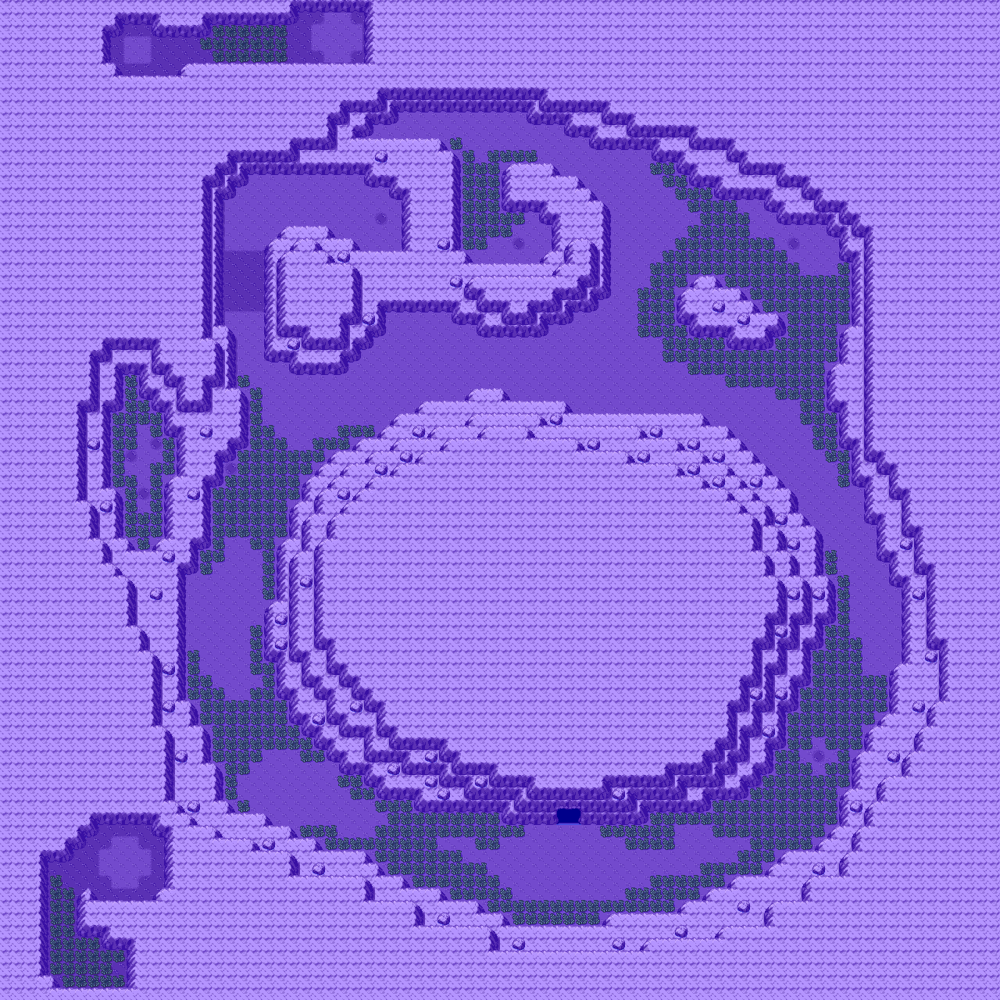
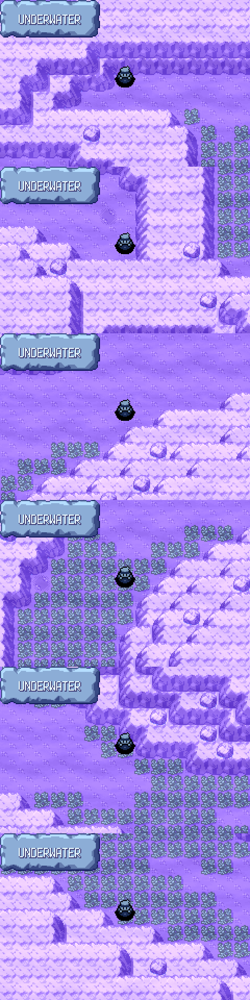

OFFICIAL FIELD GUIDE
Underwater Route 126
ITEMS
- Friend Ball (hidden)
- Ultra Ball (hidden)
- Water Stone (hidden)
- Dive Ball (hidden)
- Dragon Scale (hidden)
- Yellow Shard (hidden)
- Deep Sea Tooth (hidden)
- Blue Shard (hidden)

POKÉMON IN THIS AREA
| POKÉMON | METHOD | LEVELS | POKÉMON | METHOD | LEVELS |
|---|---|---|---|---|---|
| Clamperl | Grass | 34–38 | Alomomola | Grass | 38–42 |
| Corsola | Grass | 34–38 | Bruxish | Grass | 38–42 |
| Huntail | Grass | 38–42 | Relicanth | Grass | 38–42 |
| Gorebyss | Grass | 38–42 | Cursola | Grass | 38–42 |
| Feebas | Grass | 34–38 | Milotic | Grass | 40–44 |
| Carbink | Grass | 34–38 | Palafin | Grass | 40–44 |
UNDERWATER ROUTE 126 END TO END

6 viewpoints, stitched in order of travel
228